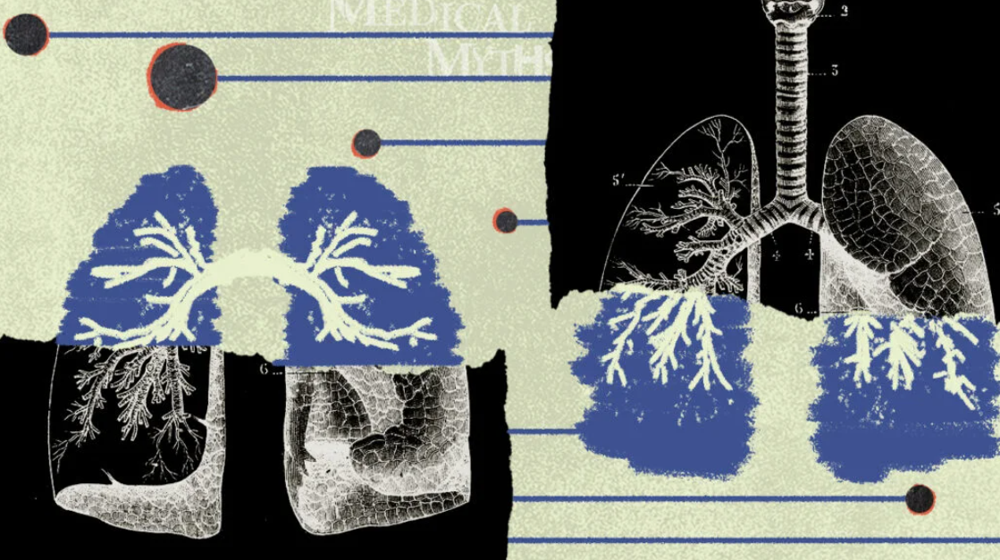

Medical Myths: All about lung cancer
Lung cancer myths can add stigma and confusion, especially around smoking, screening, surgery, and treatment options.

Medical News Today's lung cancer myth article addresses common misconceptions: that only smokers get lung cancer, that diagnosis is always hopeless, or that surgery can make cancer spread.
How to read the risk
The clearest prevention advice remains not smoking and avoiding secondhand smoke. But a responsible public health message also avoids blaming patients and focuses on early symptoms, risk assessment, and care access.
Persistent cough, chest pain, unexplained weight loss, coughing blood, or shortness of breath should be checked rather than ignored or explained away.
Source: Medical News Today, "Medical Myths: All about lung cancer". This page is a short curated summary.